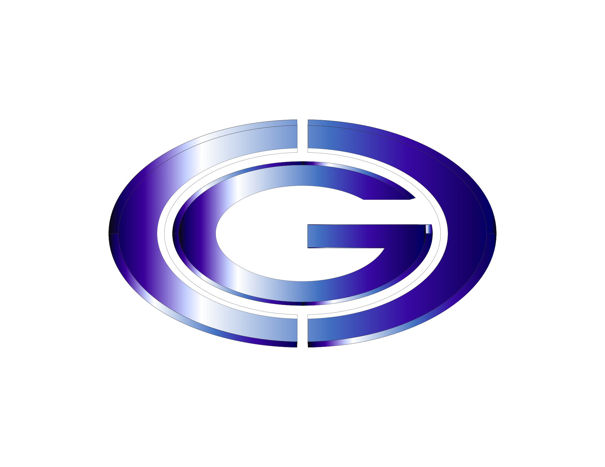

<mat-toolbar color="primary">
  <button
    type="button"
    aria-label="Toggle sidenav"
    mat-icon-button
    (click)="drawer.toggle()"
    *ngIf="isHandset$ | async">
    <mat-icon aria-label="Side nav toggle icon">menu</mat-icon>
  </button>
  <span>CGC Tecnologia</span>

  <span style="flex: 1 1 auto;"></span>

  <div>
    <span>Registra </span>
    <button type="button" mat-icon-button (click)="openRegister()">
      <mat-icon>assignment</mat-icon>
    </button>

    <span>Login </span>
    <button type="button" mat-icon-button (click)="openDialog()">
      <mat-icon>input</mat-icon>
    </button>

    <button mat-icon-button [matMenuTriggerFor]="menu">
      <mat-icon>more_vert</mat-icon>
    </button>
    <mat-menu #menu="matMenu">
      <button id="admin" mat-menu-item>
        <mat-icon>dialpad</mat-icon>
        <span>Adminstrador</span>
      </button>
      <button id="convidado" mat-menu-item>
        <mat-icon>voicemail</mat-icon>
        <span>Convidado</span>
      </button>
      <button id="site" mat-menu-item>
        <mat-icon>notifications_off</mat-icon>
        <span>Site</span>
      </button>
      <button id="auth" mat-menu-item>
        <mat-icon>alarm_on</mat-icon>
        <span>Autorização</span>
      </button>
    </mat-menu>
  </div>

</mat-toolbar>

<div style="text-align:center">
  <h1>
    Bem vindos {{ title }}!
  </h1>
  ;

</div>
